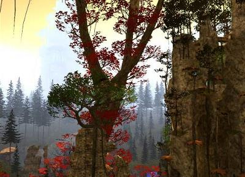
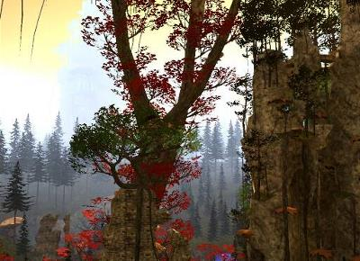

RPG player
Controller driver
Active since 2007
Joined Milkyway at it's debut
Play with a 4:3 screen
Top 2 at Rpg Nightcup [Edition#15]
Also known as mapper, he built map in tmnf for multiple tournaments
RPG player
Controller driver
Active since 2017
Joined Milkyway in january 2021
Second of the Rpg Nightcup [Edition#24]
Third of the first Edition of the Classic Rpg cup
Also a dirt player at his time :
Finished 31 at the first Edition of the TDL (trackmania dirt league)
Love vanilla rpg map
Also a mapper some time :
Made a map for the GPRace cup in 2020
Builded a Vanilla Rpg map and some mini-rpg as well
RPG Player
Controller driver
Active since 2019
joined Milkyway in December 2020
Now the Video Maker of the Milkyway youtube channel
Made almost all of the recent Video
Also help with the skin of the team
Finished second at the Rpg Nightcup [Edition#23]
Second place at the MiniRPG championShip season 1
Top 7 at his first nightcup [Edition #21]
27 place at the OGL winter
The only one with choco to really have hunted Bullet time
Hate Backflip ( don't ask me why! )
RPG player
Controller Driver
Active since 2013
Joined Milkyway in march 2018
Third place at the first Edition of the brawl
known for Disappearing for a few month or even year, comeback to destroy some wr and redisappearing after
Rpg player
Device : ?
Active since 2015
Joined Milkyway in August 2019

Maps in order : "Abandoned mine"; "Wounder2"; "B L O O S W A M P";
"Nyx"; "Gravity"; "Slumber Party"; "Immunity"; "Wounder"
Rpg mappers
Controller driver
Active since
Joined Milkyway as a mapper in may of 2021
Now the admin of the Rpg nightcup tournaments
Created some of the trickiest and sickest map that trackmania have ever Seens :
"Wounder", "Nyx", "Cyber hell" and 3 very very tricky mini-rpg :
"Immunity", "Gravity" and "Slumber Party"
Went afk for a few years but came back recently to restart bulding some awesome map again
Since then, he builded a few more amazing map :
"Wounder2", "Abandoned mine" as well as his newest map
"B L O O D S W A M P"
Maps in order : "Nature's Voices"; "Colored eyes"
Keyboard Driver
Active since 2015
Joined milkyway in march of 2017
Ex tech driver with THE
Tech mapper and tester at "CPS" and "TTC" in 2017
Ex canyon driver in the team VELOX
Rpg map "Natures voices" used for Rpg nightcup [Edition#15]
Builded "Colored eyes" and "Natures Voices"


Maps in order : "Shipwrecked"; "Alien's Exist";"TelDrassil"; "RedChockCanyon";"RedChockCanyon2";
"Echo'Isles"; "Aqua Igneatus Terra Caeli"; maniacisco;
RPG mapper
Controller driver
Active since 2008
Creator of Milkyway with Chocolleight
Car skin designer for the team and friends
Logo Designer
Rank 2 and 3 at the "Rpg Hunting cup" mapping contest in 2016
Rank 2 with choco at the "Atlas RPG cup" mapping contest in 2018
Builded some of the biggest map in tm2 Rpg :
"Aqua Igneatus Terra Caeli" in duo with Grimgor as well as "Maniacisco2917"
that he builed in duo with Chocolleight
Builded a lot of other smaller map :
"Shipwrecked", "Alien Exist", "RedChockCanyon", "Teldrassil",
"RedChockCanyon2" and his most recent one "Echo"Isles"
Map used for Rpg nightcup [Edition#23]
 

Maps in order : "Nadeo'ica";"Only a wooden leg remained...";
"A normal fishing day"; "Nature's blight is human height";
"Lapsed ~ Sanctuary"; "Location of Ascension"; "Breakthrough"
RPG mapper
Keyboard driver
Active since 2012
Joined at its debut
Known in the community for his contribution of "Custom Blocks",
wich fills half of the RPG-titlepack and ESL-Competition Titlepack
Also known for his "Monster" Maps, wich all inovated and pushed
the limit of maniaplanet
Make most of his map with object he create himself in blender
Each of his map is totally Unique
Builder of :
"Nature's blight is human height" with Skellborn and Maxi, "Breakthrough",
"A normal fishing day", "Nadeo'ica", "Only a wooden leg remained...",
"Lapsed ~ Sanctuary" and his newest one : "Location of Ascension"